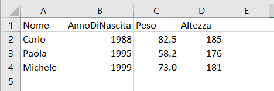
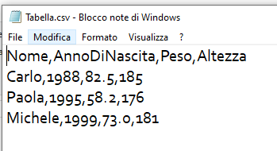
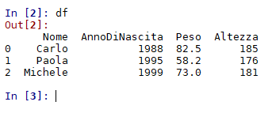
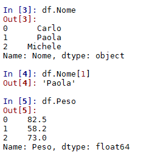
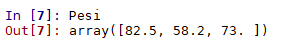

I dati e i file csv
2. Leggere e scrivere file csv con Blocco Note
3. Leggere e scrivere file csv con il Foglio Elettronico
4. Leggere e scrivere file csv con Python
1. I file csv
I dati sono spesso organizzati in tabelle, come la seguente:
| Nome | AnnoDiNascita | Peso | Altezza |
| Carlo | 1988 | 82.5 | 185 |
| Paola | 1995 | 58.2 | 176 |
| Michele | 1999 | 73.0 | 181 |
La prima riga contiene le intestazioni delle colonne mentre le righe successive contengono i dati veri e propri. Ogni riga, eccetto la prima, viene chiamata un record e consiste in un insieme completo di informazioni relativa a una singola entità.
Molti programmi, compresi i fogli elettronici, utilizzano tabelle di questo tipo per registrare un insieme di dati.

I fogli elettronici tuttavia sono programmi molto complessi e in generali creano file che contengono molte informazioni in più rispetto ai soli dati: formattazione, formule, grafici...
I file che contengono solo i dati, organizzati appunto in tabella, sono i file CSV. Questi file hanno il vantaggio di poter essere letti da tante applicazioni diverse, compresi i programmi scritti con Python, C, R e altri linguaggi grazie al fatto di essere essenziali. L'acronimo CSV significa Comma Separated Values, cioè Valori Separati da Virgola: ogni record è scritto su di una riga, con i diversi valori separati appunto da una virgola. L'esempio che abbiamo utilizzato sopra, aperto dal programma Blocco Note, apparirebbe così:

Questo è lo standard internazionale per i file CSV, ma poiché in Italia spesso si usa la virgola come separatore decimale, in questo caso si usa il punto e virgola per separare i diversi valori di un record. Nel sito Occhiali Matematici tuttavia usiamo sempre il punto come separatore decimale e la virgola come separatore tra i valori, per permettere di utilizzare i file anche con linguaggi di programmazione che usano questo standard.
2. Leggere e scrivere file csv con Blocco Note
Blocco Note di Windows è un editor di testo essenziale, che può creare e manipolare file di testo senza formattazioni particolari. Può quindi essere usato anche per per scrivere un file CSV secondo la struttura che abbiamo indicato prima:- Nella prima riga le intestazioni delle colonne, separate da virgole (o eventualmente da punti e virgola)
- Nelle righe successive i valori delle grandezze relative ai diversi enti, sempre separati da virgole (o punti e virgola)
Osserviamo tuttavia che Blocco note di default salva e apre solo file con l'estensione .txt. Per creare un file .csv bisogna prima crearlo come .txt e poi rinominarlo, mentre per aprirlo o modificarlo bisogna selezionarlo con il tasto destro del mouse e poi scegliere l'opzione Apri con ... e selezionare Blocco Note.
3. Leggere e scrivere file csv con il Foglio Elettronico
Abbiamo sottolineato che i file .csv rispecchiano la struttura dei file di un foglio elettronico, ma questi ultimi di solito contengono molte più informazioni. Per creare un file .csv a partire da una tabella in un foglio elettronico potete selezionare il comando Salva col nome... e poi scegliere l'opzione CSV.
Se invece volete aprire un file .csv con un foglio elettronico potete provare le procedure seguenti:
-
Fate doppio clic sul file: a seconda delle impostazioni delle app nel vostro pc è possibile che il foglio elettronico sia già il programma di elezione per aprire i
.csv; dovrebbe anche aprirsi una finestra di dialogo che permette di specificare i separatori usati (virgola, punto e virgola o altro). - In alternativa selezionato il file col tasto destro, scegliete Apri con... e infine il foglio elettronico desiderato; anche in questo caso dovrebbe aprirsi la finestra di dialogo per specificare i separatori.
- Se con Excel il file non si apre, o non viene formattato a dovere perché non si apre la finestra di dialogo, aprite prima il foglio elettronico; dal menù Dati scegliete Carica dati esterni con l'opzione da testo e infine selezionate il file che desiderate.
- Se con Libre Office Calc il file non si apre o non presenta la finestra di dialogo è sufficiente aprire prima il foglio elettronico poi dal menù File scegliere il comando Apri... e selezionare il file.
4. Leggere e scrivere file csv con Python
Il metodo più comune per gestire la lettura e la scrittura dei dati su file CSV in Python è usare il modulo pandas. È utile usare in parallelo anche il modulo numpy
per gestire gli array.
Il comando pandas.read_csv crea un dataframe, cioè una struttura di dati equivalente alla tabella ma utilizzabile in Python.
import pandas as pd
import numpy as np
df = pd.read_csv('tabella.csv')
Se digitiamo df, cioè il nome che abbiamo assegnato al dataframe, otteniamo una stampa della tabella (se è lunga, solo le prime e le ultime righe):

ma soprattutto abbiamo a disposizione tutte le colonne, o i singoli elementi, utilizzando il nome del dataframe e quello della caratteristica, separate da un punto:

Per molti usi i dati possono essere utilizzati così, ma possiamo tasformarti in veri e prorpi array numpy con il metodo values:
Pesi=df["Peso"].values

Il procedimento inverso è quello di costruire un dataframe a partire da un insieme di array, e scrivere il risultato in un file CSV. Supponiamo di avere tre array, uno con i nomi dei pianeti, uno con le distanze dal Sole e uno con i periodo orbitali. Possiamo usare il comando DataFrame per costruire il dataframe, passando gli array come un dizionario, e infine il metodo to_csv per scrivere il risultato in un file csv:
Distanza=np.array([0.39, 0.72, 1.0, 1.52]) #distanza dal Sole in U.A.
Periodo=np.array([0.24,0.62, 1.0,1.88]) #periodo orbitale in anni
Pianeti=np.array(["Mercurio","Venere","Terra","Marte"])
SistemaSolare=pd.DataFrame({
"Pianeta":Pianeti,
"Distanza":Distanza,
"Periodo":Periodo})
SistemaSolare.to_csv("DatiSS.csv",index=False) #index=False serve per non numerare le righe

Questo è particolarmente utile se i dati devono poi essere elaborati con un altro programma.